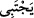
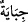

şeydir” (Sàd, 38/5) dediler.
Katâde şöyle der: Allah’tan başka ilah olmadığına ve O’nun tek olduğuna şehâdet
etmek, İblis’e ve onun ordularına ağır ve zor gelmiştir. Allah Teâlâ ise bu şehâdeti ona
düşman olanlara ızhar edip ilan etmekte ısrar etmektedir.
“Allah” tercihini dâvet edildiği tevhid ve İslam’dan yana kullanan kullarından
“dilediğini kendisine seçer.”
Râgıb buradaki “__WORD__/yectebî” kelimesinin lügavî anlamının “suyu havuzda toplamak”
mânâsını ifâde ettiğini söylemiş bu havuza da “câbiye” denildiğini ifâde etmiştir. Bu
mânâda haraç vergisinin toplanmasına da mecâzen “__WORD__/cibâye” denilir. “__WORD__ /İctibâ”
seçerek toplamak demektir. Burada bu kelime “cibâye” kökünden alınmış olup bu ise
haracı toplayıp yığmak mânâsına gelmektedir.
Âyet-i kerîmede “toplamak” mânâsını ifâde eden bu sözde “dinde ayrılığı yasaklama”
hükmüyle bir nisbet ve münasebet kurulmaktadır. Bir de “seçme” mânâsında olan
“ictiba” kelimesi __WORD__/ilâ ile müteaddi olmaz. Ancak “zam” ve “sarf” mânâlarını tazmîn
ettiği itibar edilerek bu durum gerçekleşir. Mânâ şöyledir: Allah seçmeyi dilediği
kimseleri senin dâvet ettiğin İslâm’a seçer. Bu seçilen kimseler de, kendi tercihlerini
dâvet edildikleri tevhid ve İslâm’dan yana kullananlardır.
Allah iyi niyetle “kendisine yöneleni de” irşâd, tevfik ve lutuf yardımlarıyla “doğru
yola iletir.”
Allah kullarından dilediklerini, kulların kâbiliyetlerine göre seçip kendi zâtına katar.
Kendine yönelene de yardım ederek onu doğru yola sevkeder. Allah’ın kulu seçmesi,
ilahî feyzini ona tahsîs etmesi demek olup, kulun cehd u gayreti olmaksızın çeşit çeşit
nimetler bundan ortaya çıkmaktadır. Bu durum, peygamberler ve onlara yakın olan
sıddîk ve şehidler içindir.
Kâşifi der ki: Kim her şeyden yüz çevirerek Hakk’ı isterse, Allah Teâlâ ona doğru
yolu gösterir.
Şâirin ifâdesiyle:
Eğer O Hazret’in; “Ey yolunu kaybetmiş, doğru yol burada”
Nidâsını duymak istiyorsan, bütün isteklerinden yüzünü O’na çevir.
et-Te’vîlâtü’n-Necmiyye’de şöyle denmektedir: Allah Teâlâ “Allah dilediğini
kendisine seçer” âyeti ile meczûb ve sâlik makamlarına işâret etmektedir. Zîrâ cezbe
ile Allah’ın sevgisine mazhar olan meczûb Allah’ın has ve hâlis kullarından olup Allah
Teâlâ onu ezelde seçerek sevgililer dizisine almış, kendi zâtına has kılmıştır. Yine Allah
Teâlâ meczûb kulunu dünya ve âhiret takıntılarından koparıp insan ve cinlerin ameline
denk bir cezbeyle kendi zâtına cezb etmiştir. Artık o “güçlü padişahın huzurunda
doğruluk koltuğunda bulunmaktadır.” (el-Kamer, 54/55)
Sâlik ise avam ve halk tabakasından sıradan kullar olup yine Allah Teâlâ’nın
sevgililer dizisine kattığı bahtiyar insanlardandır. Bunlar cehd ve inâbe ayakları üzerine